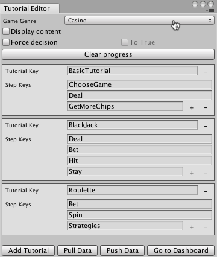

Tutorial Editor Window
Use the Tutorial Editor window to create and edit the tutorial configuration that describes the steps of your tutorials.
When the configuration is finished, the Tutorial Editor allows you to upload the configuration to the Tutorial Manager service. You can also pull any remote changes made to the configuration back to the editor.
Open the Tutorial Editor window with the menu: Window > Unity Analytics > Tutorial Editor.
Tutorial Editor properties

| Element | Purpose |
|---|---|
| Game Genre | The genre of your game. Choose the genre that best describes your game. |
| Display content | When checked, the editor window displays the text of AdaptiveText components beneath the associated tutorial step. |
| Force decision | Simulates a specific decision from the Tutorial Manager decision engine while testing in play mode in the Unity Editor. Set the decision to simulate with the To True option. |
| To True | Check the To True option to simulate a decision to show the tutorial; uncheck the box to simulate a decision to not show the tutorial. |
| Clear progress | Clears the Tutorial Manager state. |
| Tutorial Section | Each tutorial has its own section in the window. |
| Tutorial Key | A unique identifier for the tutorial. |
| Delete Tutorial Button | Click - to delete the tutorial. (You cannot delete the first tutorial in the window.) |
| Step Keys | A unique identifier for each step in the tutorial. |
| Step Text | (Read only) The text associated with the tutorial step. Shown when Display content is checked. |
| Add, Remove Step Buttons | Click the + or - buttons next to the last step to add or remove steps at the end of the tutorial. Each tutorial must have a minimum of one step and a maximum of fifty steps. |
| Add Tutorial | Add a new tutorial section to the game. |
| Pull Data | Pulls data from the Development environment of the Tutorial Manager service. Caution: Pulling data overwrites all changes you have made to the tutorial structure and adaptive text since the last time you pushed your data to the service. |
| Push Data | Pushes data to the Development environment of the Tutorial Manager service. Caution: Pushing data overwrites the tutorial structure and adaptive text currently in the Development environment. |
| Go to Dashboard | Opens the Tutorial Manager dashboard. |
Entering the Tutorial Configuration
Use the Tutorial Editor window to create a configuration that describes the steps of your adaptive tutorials:
Open the Tutorial Editor window (menu: Window > Unity Analytics > Tutorial Editor).

Set the Game Genre. This setting is used by the Tutorial Manager machine learning algorithm. Choose the category that best describes the play style of your game.
The Tutorial Manager creates one tutorial entry automatically. If you have more than one tutorial, click the Add Tutorial button at the bottom of the window to create additional tutorials.
Assign a unique tutorial key name to identify each tutorial.
Add steps to the tutorial by clicking the + button next to the last existing step. (A single tutorial can contain up to 50 steps.)
Assign each step a key name. (The names must be unique within the same tutorial.)

A game with three tutorials, each with 3-4 steps
Click Push Data. Pushing uploads the structure of your tutorials to the Analytics service and creates or updates the remote text for any AdaptiveText components.
Note: Key names must start with a letter and may contain only letters or numbers.